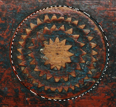

Figure 16.33. Example of using Distort on a selection

An image with a selection

After “Distort”
The “Distort” command deforms the selection contour.
This command has several options which allow to increase or reduce the deformation. It is not possible to foresee the result and you have to experiment.
- Threshold
-
A higher threshold shrinks the distorted selection. A lower threshold makes the selection bigger.
If the active selection has a regular shape (e.g. rectangle or ellipse selection), this option controls if the new outline is more inside the original selection or more outside the original selection.
- Spread
-
A higher “Spread” increases the deformation.
- Granularity
-
A higher “Granularity” increases the deformation.
- Smooth
-
A higher “Smooth” decreases the deformation.
- Smooth horizontally, Smooth vertically
-
Deactivating Smooth horizontally or Smooth vertically increases the deformation.